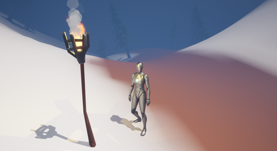
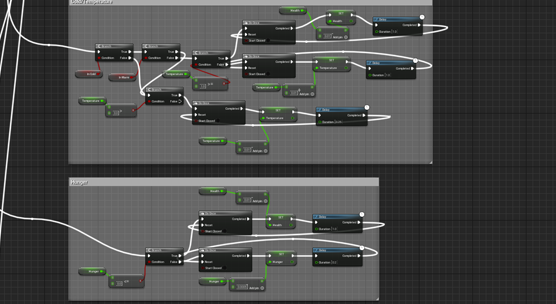

The enemies in the game serve to hinder the player completing their objectives, but not be the main challenge in the game. The enemies will be wild animals such as bears and wolves that the player can hunt for food or simply try to ignore and escape. They will also be able to obtain materials like fur from these animals and sell it.

Shops
In the village area on the map, there will be many merchants that the player can buy and sell different items and upgrades from. There will be a hunter, who you will be able to buy food, animal resources and things like bows from, and a blacksmith, who you will be able to buy tools and accessories from and upgrade your existing ones.

Hunger & Temperature
In the game, there will be many different mechanics on the mountain working against you and trying to bring you down. These include the hunger and cold systems. These systems will make the player have to periodically go to torches and fire in cold areas to cool down and also periodically eat food that they may hunt themselves or just buy to not starve.